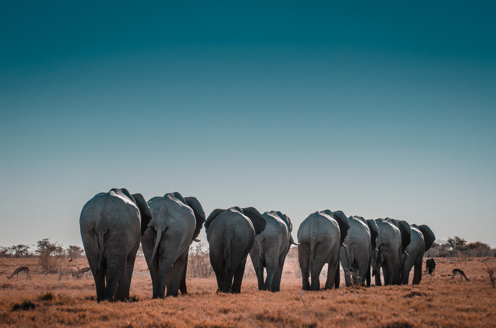

Hells Gate
Hells Gate is one of the greatest historical sites in Kenya.It forms a quarter of the Great Rift Valley. Its great Sceneries including the toweing cliffds, water-gouged gorge, scrub clad volcanoes and dtark rock towers. Activities to engage in include Biking, Bird watching, camping, Game viewing, Hiking and Rock Climbing.
Mt Longonot
Believed to have last erupted in the 1960s, Mt longonot is a stratovolcano in the Rift valley region in Kenya. One of its unique features is the thick forest that lies within the mountain's crater. Its rim provides great a great scenery of the Rift Valley. You also get to see wildl animals as you hike through the mountain.A 3.1 km trail runs from the park entrance up to the crater rim. Going up the mountain takes two hours and going round the crate takes another two hours.
Lake Nakuru National Park
Lake Nakuru is arguably one of the most beautiful Lakes in Kenya. With a wide range of animals. Come experience the wide ecological diversity through bird watching, hiking, game drives. You will also get an opportunity to see the beautiful flamingos at the shore.
Aberdare Forest
Mt Kenya
Nanyuki
Voi
Mombasa
Watamu
© 2020, Raymar Adventures.